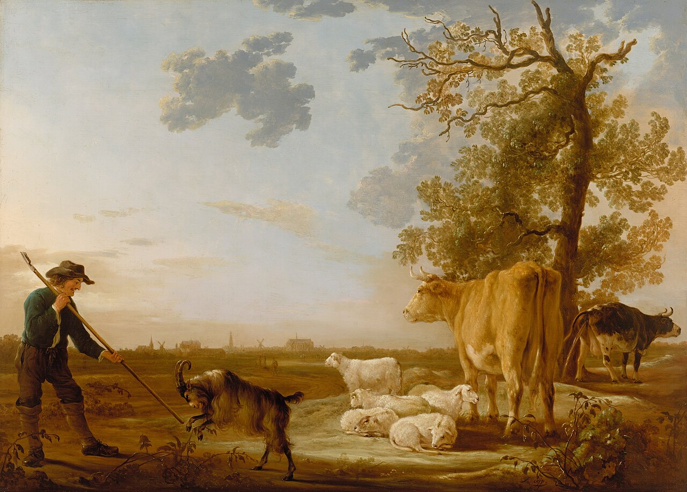

From the Basque Country to the American West

Photo: Aelbert Cuyp / Wikimedia Commons (Public domain)
The Australian Shepherd's story doesn't start in Australia at all — it starts in the Basque Country, on the border of Spain and France. Basque shepherds had worked with capable herding dogs for centuries. In the 1800s, many of these shepherds emigrated, some by way of Australia, bringing flocks of sheep and their working dogs with them to the American West — particularly California and the surrounding sheep-ranching states.
American ranchers who encountered these dogs assumed they'd come straight from Australia along with the sheep, and the name stuck — even though the breed as we know it was really developed and refined stateside. Ranchers selectively bred for intelligence, stamina, and herding instinct, shaping the breed into the all-purpose working dog we recognize today.
Rodeos, Westerns, and a Rise to Fame
The Aussie's popularity took off in the 1950s and '60s, when the breed became a fixture of rodeos and western horse shows. Trainers discovered that Aussies were spectacular trick-and-stunt performers, and the dogs began appearing in western films and television — cementing their image as the quintessential American ranch dog, even with that Australian-sounding name.
The American Kennel Club officially recognized the Australian Shepherd in 1993, placing it in the Herding Group, where it remains one of the most popular and beloved working breeds in the country.
From Ranch to Everywhere
Today's Aussies still herd — but they've also branched out into service and therapy work, search-and-rescue, and competitive dog sports like agility and flyball, where their speed, precision, and eagerness to please make them standout performers.